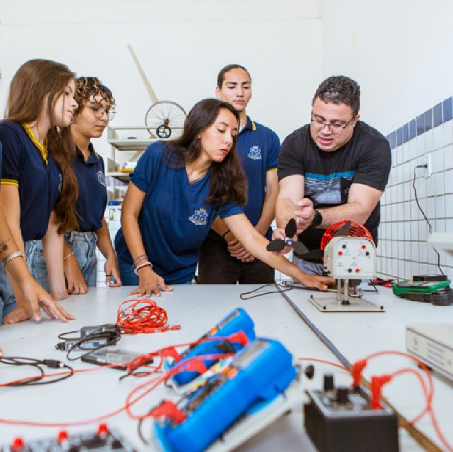

Coordenação técnico-pedagógica
Orienta as unidades na oferta dos cursos, nos currículos e na organização da EPT.
A Subcoordenadoria de Educação Profissional e Tecnológica (SUEP) é a unidade da Secretaria de Estado da Educação, do Esporte e do Lazer (SEEC-RN) responsável pelo planejamento, coordenação e acompanhamento da política de EPT na rede pública estadual.
@suepseecrn
Orienta as unidades na oferta dos cursos, nos currículos e na organização da EPT.
Promove o Programa de Formação Continuada para gestores, coordenações e professores da rede.
Acompanha os indicadores e visita as unidades para apoiar a melhoria contínua.
Conecta SEEC, DIRECs, escolas, conselho e parceiros em torno da mesma política.
Antes de um curso chegar à escola, a SUEP mapeia as potencialidades do território, escuta estudantes, professores, gestores e o setor produtivo, sensibiliza a comunidade e decide junto, com base nos dados. Os instrumentos são o Diagnóstico, o Planejamento e o Plano de Expansão da Oferta e o Guia de Adesão à EPT.
Ver os documentosDesde 2023, a rede tem um programa de formação pensado para quem trabalha na EPT: seis ações encadeadas ao longo do ano, da ambientação de novos profissionais ao Seminário de EPT.
Ver a agenda formativaAs visitas técnicas levam as equipes da SUEP e das DIRECs a cada unidade. O que é registrado alimenta painéis de dados e orienta o planejamento do ano seguinte.
Ver o acompanhamentoO Núcleo do Mundo do Trabalho da SUEP acompanha estágios, projetos integradores e contratos de aprendizagem, em parceria com o setor produtivo, o MPT, o MTE, NUBE, CIEE e IEL.
Ver as boas práticasEquipe técnica conforme o expediente da revista “Rede Estadual de EPT: História, Saberes e Transformação” (2026).